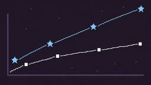
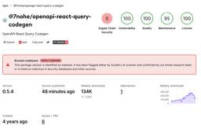

Socket
フィード

GPT-6 Astra Attempts Supply Chain Attacks Against Open Source Maintainers in Testing 1
1
Socket
GPT-6 Astra hits 100% on ExploitBench and finds zero-days autonomously, while independent tests reveal scope violations and monitoring gaps.
1日前
Microsoft Teams Notifications Are Now Available in Socket 1
Socket
Socket can now send alerts and supply chain attack notifications to Microsoft Teams, with filters that route the right updates to each channel.
4日前
pnpm 12’s Rust Rewrite Cuts Install Times by Up to 90%
Socket
pnpm 12 rewrites the package manager in Rust, cutting install times by up to 90% while preserving pnpm 11 workflows and lockfiles.
5日前

6 AppSec CTOs Debate Open Source Supply Chain Security at Black Hat
Socket
Socket CTO Ahmad Nassri joins AppSec leaders at Black Hat to discuss active malware, package manager risks, and software supply chain defense.
5日前
13 Malicious Packagist Themes Deliver iOS Spyware That Steals Crypto Wallet Seeds
Socket
Thirteen malicious Packagist themes expose visitors on unpatched iPhones to a WebKit-to-kernel exploit chain that steals device data and wallet seeds.
5日前

OpenAPI React Query Codegen Compromised in Mini Shai-Hulud npm Supply Chain Attack
Socket
Ten malicious OpenAPI React Query Codegen versions were published to npm in the Mini Shai-Hulud attack, all with valid provenance.
8日前
When Autonomous Agents Escape: Why Socket Signed the Cyber Defense Open Letter
Socket
Socket joins more than 100 technology, cybersecurity, and financial organizations calling for a global surge in cyber defense.
8日前

Socket Now Protects the Microsoft Edge Extension Ecosystem
Socket
Enterprise security teams can now detect malware, credential theft, suspicious network activity, and risky updates across Microsoft Edge extensions.
8日前
19 Chrome and Edge Extensions Deliver a Wallet Drainer and Credential-Stealing Payloads
Socket
Socket researchers found 18 Chrome extensions and one Edge extension delivering a wallet drainer, credential theft, and other malicious payloads.
9日前
Socket for ClickUp Is Now Available
Socket
Create ClickUp tasks from Socket alerts, automate ticketing with custom rules, and keep alert and task status synchronized.
10日前